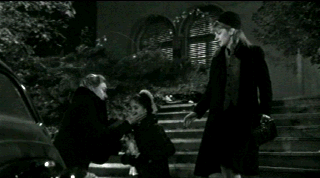
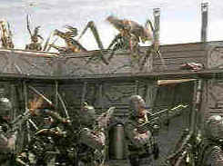
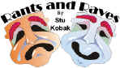

|
American Rhapsody (SE)/ B+, A- |
|
Paramount/2001/106/ANA 1.85 |
A heartfelt movie made with passion and love and
understanding, American Rhapsody is extraordinarily personal.
That's one of its great strengths. Based on writer/director Éva Gárdos'
own story of coming to America from Hungary as a young child and growing up,
the film touches the heart. Her character's journey is not complete until
she returns to Hungary as a young woman to seek out her origins and find
some peace within the conflicts that exist from her divided
upbringing.
When the Communist world tightens its grip on
Hungary, infant Suzy winds up left behind as her parents Peter and Margit
are forced to flee Budapest. The opening of the film, depicting the separation
of the family and the escape from Hungary is shot in black and white. It's
an excellent choice for the powerful prologue that sets the stage for
everything that follows. It isolates the most threatening tone of the film
and even emphasizes it.
 |
| Beautiful
black and white opening. ©Paramount |
The emotional conflicts that must be faced are
extremely powerful. Certainly, natural parents Peter and Margit must be
reunited with their daughter. They loved Suzy and when she was left behind
as a baby, it was for safety reasons and it was only to be for a very short
time. The wonderful couple who safely care for Suzy in rural Hungary love
her like their own child. They bring her up in a loving, warm, bucolic
setting. It's a Catch-22. No one wins. Finally, a time comes,
when Peter and Margit are able to bring Suzy to America. Ultimately, it is
Suzy carries the burden of the emotional dichotomy.
Some of the scenes on Suzy's arrival in America are
fantastically drawn to moving effect. They flow with a natural innocence,
perfect considering the innocence of the child. The relationship between
Suzy and her older sister rings very true. You feel for the older sister who
gives up center place in the world of her family. The portrait of suburban
America in the 1960's is depicted convincingly. The music helps establish
the period and some of the social differences as well.
Teenage Suzy is a good role for Scarlett Johansson.
She's a troubled young woman. Her sadness is highlighted by the depiction of
Suzy as the sunniest, most delightful, young child. The journey to America
may be a no-brainer, but to witness the consequences that the upheaval in
Suzy's life causes is very sad indeed. It's a melancholy journey that
must run its course.
Natasha Kinski gives an impressive
performance as Suzy's mother Margit. She has consistently grown as actress.
She's fragile yet strong. While her emotions may often be overpowering as
Margit, Kinski controls the power of the character to paint an anguished by
loving portrait. Tony Goldwyn is very good as the father. In past
performances, I've found Goldwyn somewhat unremarkable, but in American
Rhapsody, perhaps the character gives him something to dig his acting
chops into. Goldwyn's portrait certainly finds a sympathetic edge. Ágnes
Bánfalvy, a well-known stage actress in Hungary, is amazing as
Margit's mother Helen. What a great presence. She dominates the screen
whenever she is on it. Kelly Endresz-Banlaki is charming and thoroughly
engaging as the young Suzy. Balász Galkó who plays Jeno, who stands
in as Suzy's father in Hungary has an incredible look. There is no question
about the authenticity of his character. You believe every syllable he
utters.
Gárdos commands the medium very well. Her story is
nicely balanced. Visually, American Rhapsody is quite beautiful. It's
an outstanding production. Suzy's emotional journey is a rewarding
experience. Audiences should be grateful to Éva Gárdos for sharing these
beautiful memories of the immigrant experience.
American Rhapsody has been turned out in
luscious transfer clothing by Paramount. From the clean black and white
opening images that have a wonderful contrast range, subtle shadow detail
and deep, true blacks to the color in the United States which has a more
saturated look than those in Hungary to the Shadow detail is consistently
excellent. Fleshtones are replicated with a nice range. The transfer
effectively captures the subtly different lighting schemes of the film. It's
a very sharp picture with only slight peak transitional edge ringing.
The white subtitles in the Hungarian scenes are clear and easy to read on
the image. They never impede the flow of the film at all.
The special edition audio commentary by Éva
Gárdos and producer Colleen Camp is very detailed and engaging.
|
|
|
|

Starship Troopers/A-,A

A great, modern, war movie that skewers genre conventions. Director
Paul Verhoeven controls the Scifi flick with a perfect flight plan.


The Movie Poster Archive
includes extensive poster images from the films of stars like Susan Hayward,
Kirk Douglas, Katharine Hepburn and many more. Our featured star is James Mason

Imaging Science Foundation
The Imaging Science Foundation promotes proper standards in home
theater viewing. ISF trained technicians offer monitor calibration services
to consumers. The difference in a properly calibrated monitor can be
astounding. Click on the image to find an ISF member near you.

Mystery writer Fred Hunter digs into classic films on DVD. Check out his
insightful reviews at The Classics on DVD.
MRQE
Find reams of movie and DVD reviews at the Movie Review Query Engine,
a index of reviews appearing on the Internet.

DVD Demystified makes it all clear. The official Internet DVD FAQ
for the rec.video.dvd Usenet newsgroups.

Selections from the Feature
Archive include articles on Akira Kurosawa, Blonde Bimbos, Frank Darabont, Steven Culp, John Herzfeld or Vietnam: The Hollywood Pariah, and many more....
The Exquisite Muse of Zhang Yimou

The powerful image-making of Zhang Yimou has revealed itself in
virtually every film he has made. Coupled with his remarkable collaboration
with actress Gong Li, Zhang's has built a stunning body of work Click the
image to read all about it.

With the introduction of the Columbia Super Bit collection it
looks like a new wave of repackaging marketing might be just around the
corner.
New Edition: Bit by Bit
|